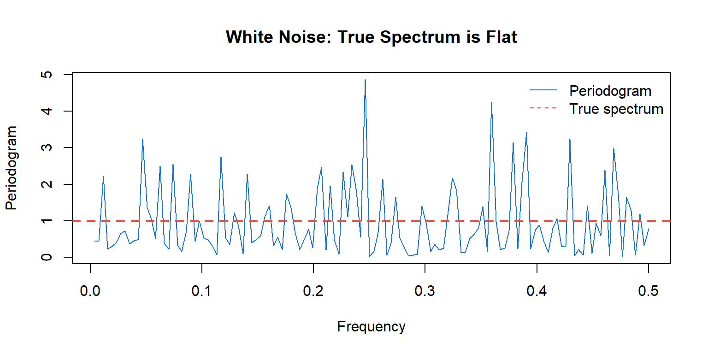
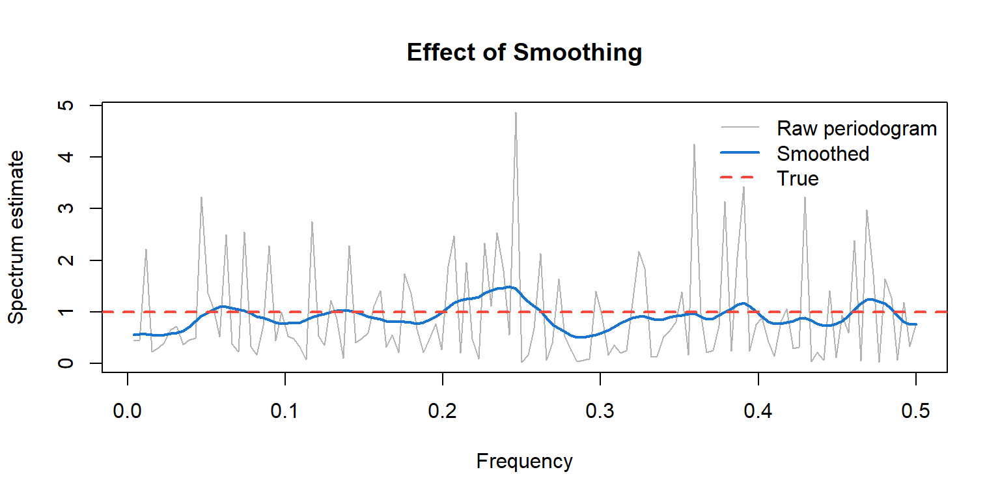
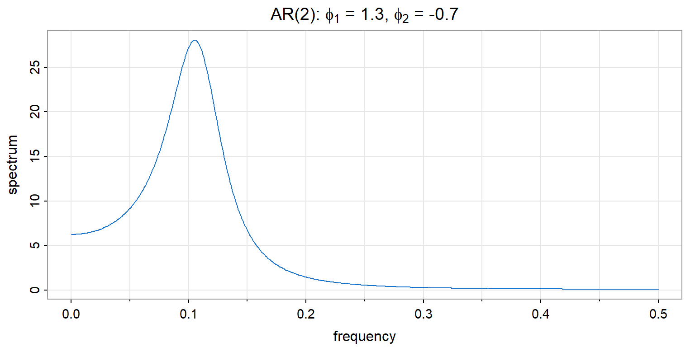
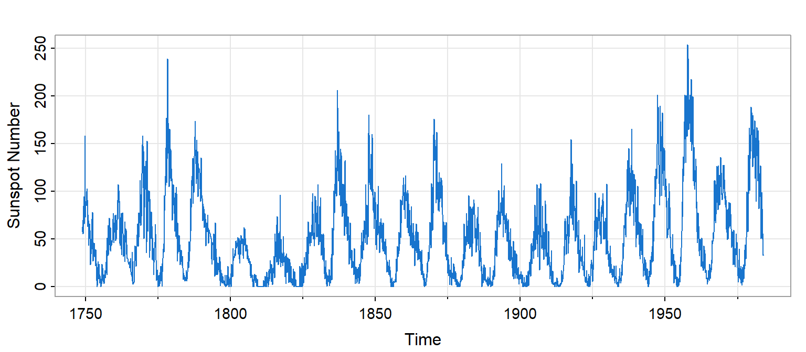
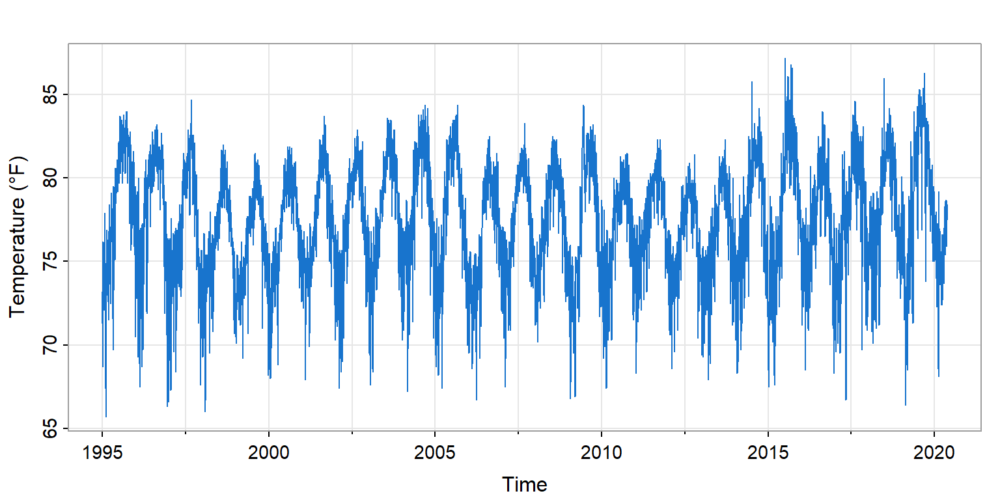
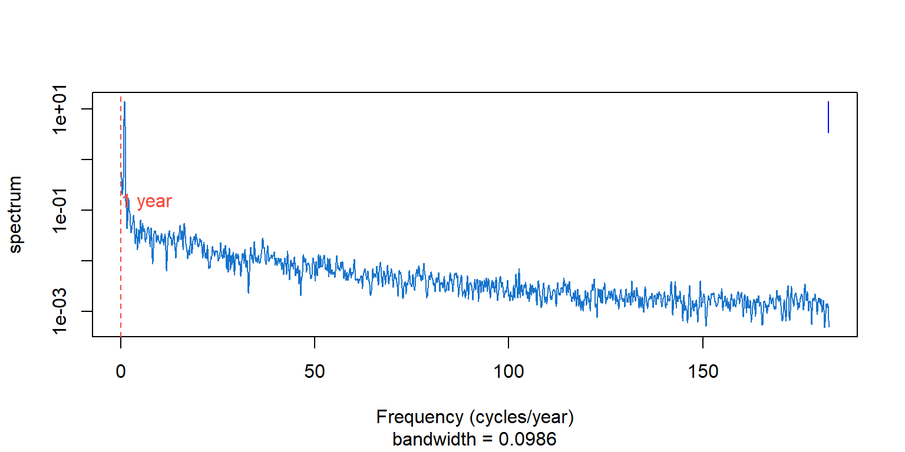
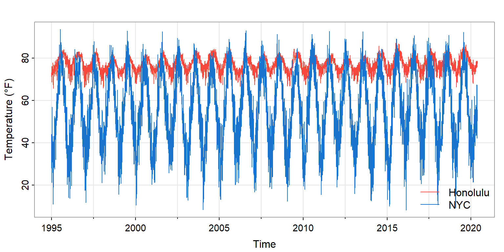
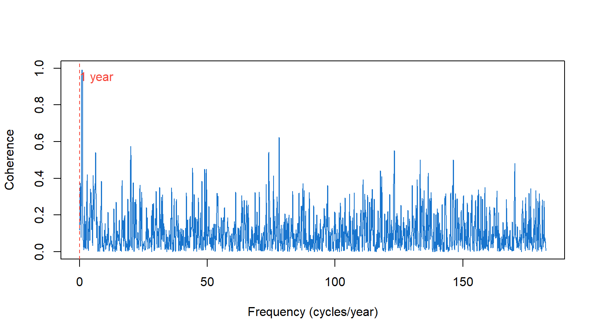

Frequency Domain Methods
Spectrum Analysis and Periodic Structure
The Frequency Perspective
From Forecasting to Understanding
Chapter 13 developed time domain methods—ARIMA models that exploit autocorrelation for forecasting.
This chapter takes the complementary view: frequency domain methods ask what periodic components are present.
| Perspective | Central Question | Emphasis |
|---|---|---|
| Time domain | How does the past predict the future? | Decision support |
| Frequency domain | What cycles and rhythms structure the process? | Scientific understanding |
Why Frequency?
Many natural and human systems exhibit periodic behavior:
- Solar activity: ~11-year sunspot cycle
- Climate: annual temperature cycles, El Niño (~4 years)
- Economics: business cycles, seasonal patterns
- Biology: circadian rhythms, heartbeat
The frequency perspective reveals these periodicities directly—as peaks in the spectrum.
The Spectrum: Variance by Frequency
The spectrum \(f(\lambda)\) decomposes variance across frequencies:
\[\sigma_X^2 = \int_{-\pi}^{\pi} f(\lambda) \, d\lambda\]
- High \(f(\lambda)\) at frequency \(\lambda\) → strong oscillation at that frequency
- Peak in spectrum → dominant cycle in the data
- Flat spectrum → white noise (no preferred frequency)
Complex Exponentials as Eigenfunctions
Why does Fourier analysis work so naturally for time series?
Complex exponentials \(e^{i\lambda t}\) are eigenfunctions of the back-shift operator:
\[\mathcal{B}^s e^{i\lambda t} = e^{i\lambda(t-s)} = e^{-i\lambda s} \cdot e^{i\lambda t}\]
Any linear, time-invariant operation (filtering, smoothing, differencing) acts simply on sinusoidal components—multiplying each by a constant.
This is why decomposing into frequency components is the natural coordinate system for stationary processes.
ACF and Spectrum: Fourier Pairs
The spectrum and autocovariance contain the same information:
\[f(\lambda) = \sum_{h=-\infty}^{\infty} \gamma(h) e^{-i\lambda h}\]
\[\gamma(h) = \frac{1}{2\pi} \int_{-\pi}^{\pi} f(\lambda) e^{i\lambda h} \, d\lambda\]
They are Fourier transform pairs. The ACF tells us about temporal dependence; the spectrum tells us about periodic structure. Same reality, different views.
The Periodogram
Estimating the Spectrum
Given data \(X(0), X(1), \ldots, X(T-1)\), how do we estimate \(f(\lambda)\)?
The periodogram is the natural sample estimate:
\[I(\lambda) = \frac{1}{T} \left| \sum_{t=0}^{T-1} X(t) e^{-i\lambda t} \right|^2\]
This is proportional to the squared magnitude of the finite Fourier transform of the data.
Periodogram: Intuition
The periodogram measures how well a sinusoid at frequency \(\lambda\) fits the data.
- Large \(I(\lambda)\) → the data oscillate strongly at frequency \(\lambda\)
- Small \(I(\lambda)\) → little power at that frequency
At the Fourier frequencies \(\lambda_j = 2\pi j / T\), the periodogram can be computed efficiently via the Fast Fourier Transform (FFT).
The Periodogram Problem
The periodogram is asymptotically unbiased:
\[E\{I(\lambda)\} \to f(\lambda) \text{ as } T \to \infty\]
But it is not consistent—its variance does not shrink:
\[I(\lambda) \sim f(\lambda) \cdot \frac{\chi_2^2}{2} \quad \text{for } \lambda \not\equiv 0 \pmod{\pi}\]
The periodogram fluctuates wildly around the true spectrum, even with large samples.
Visualizing Periodogram Variability
Figure 1: Raw periodogram of white noise: high variability around flat true spectrum
The true spectrum (red dashed) is constant, but the periodogram (blue) varies wildly.
Smoothed Spectrum Estimation
The Solution: Averaging
To reduce variance, we smooth the periodogram by averaging over nearby frequencies.
\[\hat{f}(\lambda) = \sum_j W_j \cdot I(\lambda_j)\]
where the weights \(W_j\) form a smoothing kernel centered at \(\lambda\).
More averaging → lower variance, but also lower resolution (bias).
The Bandwidth Trade-off
| More smoothing | Less smoothing |
|---|---|
| Lower variance | Higher variance |
| Blurs nearby peaks | Resolves nearby peaks |
| Risk: miss narrow features | Risk: spurious peaks from noise |
The bandwidth \(\beta\) controls this trade-off.
For a consistent estimator, we need \(\beta \to 0\) but \(\beta \cdot T \to \infty\) as \(T \to \infty\).
Modified Daniell Kernel
A common choice is the modified Daniell kernel—a moving average over adjacent frequencies.
In R, stats::spec.pgram() uses this approach:
spans: widths of Daniell smoothers (can be repeated for more smoothing)taper: proportion of data tapered at ends (reduces leakage)
Smoothed vs Raw Periodogram
Figure 2: Smoothing reduces variance while preserving the overall shape
Reading a Spectrum
Identifying Periodic Components
When examining a spectrum estimate:
- Peaks indicate dominant frequencies (cycles)
- Convert frequency \(\lambda\) to period: \(P = 2\pi/\lambda\) (in units of sampling interval)
- Low-frequency dominance suggests trend or long-memory behavior
- Flat spectrum indicates white noise (no temporal structure)
- Log scale often helps visualize structure across orders of magnitude
Confidence Intervals
For the smoothed spectrum estimate with \(\nu\) degrees of freedom:
\[\frac{\nu \hat{f}(\lambda)}{f(\lambda)} \sim \chi_\nu^2\]
This gives a confidence interval for the true spectrum:
\[\left[ \frac{\nu \hat{f}(\lambda)}{\chi_{\nu, 1-\alpha/2}^2}, \; \frac{\nu \hat{f}(\lambda)}{\chi_{\nu, \alpha/2}^2} \right]\]
Note: the interval is multiplicative, not additive—it’s the same width on a log scale at all frequencies.
The Log Spectrum
Plotting \(\log \hat{f}(\lambda)\) has advantages:
- Confidence band has constant width across frequencies
- Easier to see structure spanning orders of magnitude
- Multiplicative effects (filtering) become additive
R’s stats::spec.pgram() uses log scale by default.
Spectra of ARMA Processes
Connecting Time and Frequency Domains
For ARMA processes, we can derive the theoretical spectrum from the model parameters.
This connects Chapter 13’s models to Chapter 14’s frequency view.
Key insight: AR processes have peaks where roots of \(\phi(z)\) are near the unit circle.
AR(1) Spectrum
For AR(1): \(X(t) = \phi X(t-1) + W(t)\)
\[f(\lambda) = \frac{\sigma_W^2}{|1 - \phi e^{-i\lambda}|^2} = \frac{\sigma_W^2}{1 - 2\phi\cos\lambda + \phi^2}\]
- \(\phi > 0\): low-frequency dominance (persistence)
- \(\phi < 0\): high-frequency dominance (alternation)
MA(1) Spectrum
For MA(1): \(X(t) = W(t) + \theta W(t-1)\)
\[f(\lambda) = \sigma_W^2 |1 + \theta e^{-i\lambda}|^2 = \sigma_W^2 (1 + 2\theta\cos\lambda + \theta^2)\]
The MA(1) spectrum is the inverse pattern of AR(1) with the same parameter.
AR(2): Spectral Peaks
AR(2) with complex roots produces a spectral peak at a frequency determined by the roots.
Figure 5: AR(2) with complex roots: peak indicates quasi-periodic behavior
This is the recruitment series model from Chapter 13—the spectral peak corresponds to the damped oscillation in the ACF.
Example: Sunspots
The Solar Cycle
Figure 6: Monthly sunspot numbers show quasi-periodic behavior
As we saw in Chapter 12, sunspots exhibit an approximately 11-year cycle—but with substantial variation in both amplitude and period.
Sunspot Spectrum

Figure 7: Sunspot spectrum: dominant peak near 11-year period
The dominant peak corresponds to a period of approximately 11 years (132 months).
Reading the Sunspot Spectrum
The spectrum reveals:
- Dominant peak near frequency \(1/132\) cycles/month (~11-year period)
- Broad peak rather than sharp line → period varies from cycle to cycle
- Harmonics at higher frequencies → the cycle is not purely sinusoidal
- Low-frequency power → long-term modulation of cycle amplitude
Example: Honolulu Temperature
Annual Temperature Cycle
Daily temperature data from Honolulu exhibit a clear annual cycle—the earth’s orbit imposes a 365-day periodicity.
Question: How much of the total temperature variance is explained by the annual cycle?
Temperature Series
Figure 8: Honolulu daily temperatures (1995-2020) show clear annual cycle
The annual cycle is visible but embedded in day-to-day variation. Mean temperature is 77°F with standard deviation 3.4°F.
Temperature Spectrum
Figure 9: Honolulu temperature spectrum: sharp peak at annual frequency
Interpreting the Temperature Spectrum
- Sharp peak at \(\lambda = 1/365\) → strong annual cycle
- Peak height relative to baseline → proportion of variance at that frequency
- Low-frequency power → AR-like day-to-day persistence (today predicts tomorrow)
- Harmonics (at 2/365, 3/365, …) → cycle not purely sinusoidal
Variance Decomposition
The spectrum answers: “What fraction of variance is at frequency \(\lambda\)?”
For temperature data:
- Annual cycle (and harmonics): typically 60–80% of variance
- Day-to-day persistence: most of the remainder
- High-frequency noise: small contribution
This quantifies what the time plot shows qualitatively—the annual rhythm dominates.
Coherence: Shared Periodicity
Cross-Spectrum and Coherence
When we have two time series, we can ask: at which frequencies do they move together?
Coherence measures the correlation between two series at each frequency.
- Ranges from 0 (no linear relationship) to 1 (perfect linear relationship)
- The frequency-domain analog of correlation
HNL vs NYC Temperature
Figure 10: Daily temperatures at Honolulu and New York City (1995-2020)
Both cities show annual cycles, but NYC has much larger amplitude (mid-latitude seasons) and more day-to-day variability.
HNL-NYC Coherence
Figure 11: Coherence between Honolulu and NYC temperatures
Interpreting the Coherence
At the annual frequency: Coherence ≈ 1
- Both cities warm in summer, cool in winter
- Shared driver: Earth’s orbital cycle
At higher frequencies: Coherence ≈ 0
- Day-to-day weather in Honolulu tells us nothing about NYC
- Local weather systems are independent
Coherence identifies which periodicities are shared between series.
The Dual Perspectives
Time-Frequency Duality
| Time Domain | Frequency Domain |
|---|---|
| ACF, PACF | Spectrum |
| AR, MA, ARIMA models | Spectral peaks, bandwidth |
| Forecasting | Identifying cycles |
| “How does past predict future?” | “What periodic structure is present?” |
These are equivalent descriptions—Fourier transform pairs—but illuminate different aspects.
When to Use Which
Time domain excels for forecasting and short-term dependence modeling.
Frequency domain excels for identifying periodicities and understanding cyclic mechanisms.
Best practice: Use both—they reveal different aspects of the same reality.
The Duality in Practice
Consider sunspots:
- Time domain: AR(2) model captures the quasi-periodic behavior; enables forecasting
- Frequency domain: Spectrum peak at ~11 years reveals the solar cycle; shows it varies
Consider global temperature:
- Time domain: Strong positive autocorrelation; trending behavior
- Frequency domain: Low-frequency dominance; variance concentrated at long periods
Summary
Key Insights
- The spectrum decomposes variance by frequency
- Peaks indicate dominant cycles
- Flat spectrum indicates white noise
- The periodogram is the sample estimate
- Unbiased but inconsistent (high variance)
- Asymptotically \(\chi_2^2\) distributed
- Smoothing reduces variance
- Trade-off: variance vs frequency resolution
- Bandwidth controls the trade-off
Key Insights (continued)
- ARMA spectra connect the two domains
- AR peaks where polynomial roots near unit circle
- MA has inverse pattern
- Time and frequency are Fourier pairs
- Same information, different emphasis
- Time domain → forecasting
- Frequency domain → understanding periodic structure
- Use both perspectives
- Complete analysis draws on both
- Understanding enables better prediction
Practical Checklist
When performing spectrum analysis:
Plot the time series first: Look for obvious periodicity, trend, level shifts
Choose appropriate smoothing: More data → can use narrower bandwidth
Use log scale: Constant confidence band width; see structure across magnitudes
Identify peaks: Convert frequency to period; interpret physically
Consider ARMA spectra: Do peaks match expected model structure?
Connect to time domain: Do ACF patterns match spectral features?
Exercises
Team Exercise 1: White Noise Spectrum
Generate 256 observations of Gaussian white noise using stats::rnorm():
- Compute and plot the raw periodogram using
stats::spec.pgram(..., spans = NULL). - The true spectrum is flat. How much does the periodogram deviate from flat?
- Apply smoothing with
spans = c(7, 7). How does the estimate improve? - Why is the periodogram inconsistent even though it’s unbiased?
Team Exercise 2: Identifying Periodicities
Using the SOI data (astsa::soi):
- Plot the spectrum with appropriate smoothing.
- Identify the two dominant peaks. What periods do they correspond to?
- One peak is at annual frequency. What physical phenomenon explains the other?
- How does the spectrum reveal information that the ACF shows less clearly?
Team Exercise 3: Bandwidth Trade-off
Using the sunspot data (astsa::sunspotz):
- Estimate the spectrum with
spans = c(3, 3)(narrow bandwidth). - Estimate again with
spans = c(15, 15)(wide bandwidth). - How do the estimates differ? Which shows the ~11-year peak more clearly?
- What would you choose for a final analysis, and why?
Team Exercise 4: Coherence Interpretation
For the HNL-NYC temperature data:
- At what frequency is coherence highest? Why?
- At what frequencies is coherence near zero? What does this mean physically?
- If you added a third city (e.g., London), what coherence pattern would you expect with NYC?
- How is coherence related to correlation? When might they differ?
Discussion Questions
“The spectrum and ACF contain the same information.” Why might the spectrum be more useful for some questions?
You observe a spectral peak but aren’t sure if it’s real or noise. How would you assess this?
When would you prefer time domain methods over frequency domain methods for the same data?